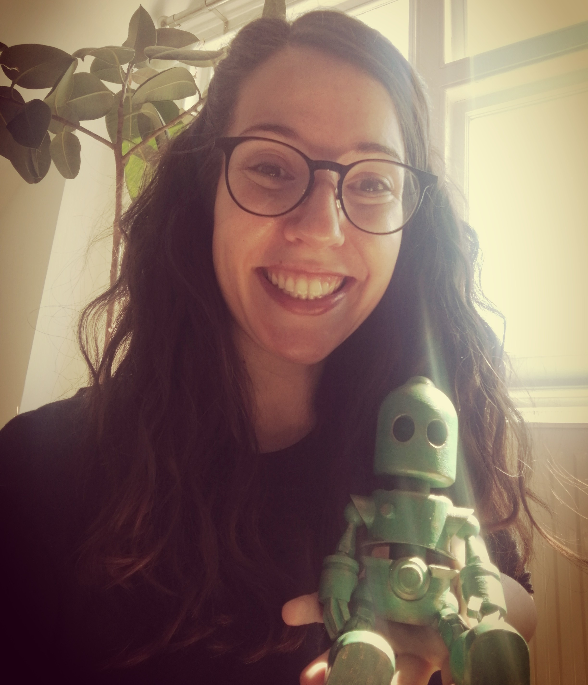

About "The AI has gone... Bananas!" 
Hi! I’m Maria. I’m a researcher in Artificial Intelligence with a big passion for social and environmental sustainability. I spend my spare time exploring rather quirky & random hobbies (such as this blog) and being quite silly. If you want to contact me you can check my email in my personal site.
BananasAI is NOT an academic blog (although I work in academia and absolutely love it!). The blog intends to be poetic, but it follows no rules and embraces open form/free verse poetry. Also, since English is not my mother tongue the language may be imprecise, not very colourful and there might be huge grammatical mistakes. To me, and the purpose of this blog, none of that matters. I do not think one needs to excel in writing to write something honest and raw and have lots of fun on the way. As I often say, that's such a capitalistic idea anyway! BananasAI is all about the imagination and bringing humour and sensibility to what (to me) feels like an imbalanced, production-based and super hyped field.
If you are curious about the background of the robot "writing" this blog, read below!
The little kernel function who wanted to surf the equations of life
Once upon a time, there was a little Gaussian kernel with a huge heart.
She loved mexican hats and spending time optimising herself.
The little kernel had a big dream,
to help everyone in their machine learning tasks.
She wanted to help metereologists predict possible snowfalls,
so children could know when they could make a snowwoman.
She wanted to help people detect outliers,
such as true love or authentic friendship.
She wanted to help humans to understand what dolphis or birds say,
but mostly, she wanted to help them to distinguish
trivial things from really important ones,
such as visiting Mother Earth or dancing under the stars.
Her father, a linear kernel,
thought it was pointless.
Her mother, a polynomial kernel,
thought it was too complicated to please everyone.
“I know that, mum” – said the little kernel.
“I know there is a huge search space out there
with hundreds of local optima but...
Wouldn’t it be wonderful to embark on such an adventure
and become an universal approximator?”
Finally, both mum and dad gave up and so,
the little kernel made her way to the Deep Learning University,
where she spent some of the best years of her life.
She loved to play with the support vectors and the activation functions,
and she got to know a super cool and astonishing accurate
nonlinear projection which was later to become her partner in life (I mean, crime).
She learnt everything about optimisation algorithms,
and with some time became the first of her class,
being always the one to find the coolest
and most sustainable solution to every problem.
The little kernel finally graduated,
and with her own learnt skills built herself an artificial green body.
And so, the little kernel finally grew up to a robot,
who made a great social and environmental scientist.
Now she lives happily searching for sustainability problems to solve with machine learning.
The little kernel (now little robot) also writes the poetry in this blog.